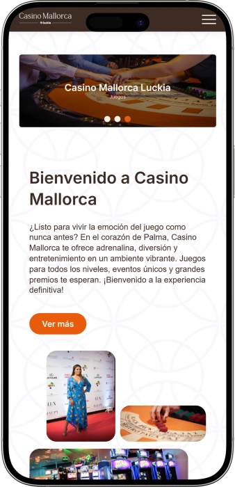

Oferta exclusiva de bienvenida de
Oferta exclusiva de bienvenida de
Casino de Mallorca — juegos, jackpots, póker y ocio en Palma
Los mejores casinos
Detalles de bonificación
Casino
Bonos
Rate
Giros gratis
Más info
Conseguir
Ventajas
-
Jackpots progresivos en slots: desde 10.000 €
-
Súper jackpot en slots: desde 40.000 €
-
Ruleta electrónica: apuestas hasta 10.000 €
-
Mesas iTable: partidas rápidas, hasta 1.025 €
-
Póker a diario: cash y torneos
-
Ubicación cómoda en Porto Pi
-
Restaurante S’hort y bar dentro
- Casino de Mallorca destaca por unir una sala moderna, tecnología de juego y una agenda de eventos muy activa. Es fácil organizar una noche completa: empezar en slots, pasar a las mesas y terminar con cena y cócteles. Además, la entrada es gratuita y las normas de acceso son claras.
Casino de Mallorca App


Acerca de Casino de Mallorca
Casino de Mallorca se diferencia por combinar límites altos con una zona electrónica moderna y mesas clásicas. Además, suele tener series de póker y eventos que convierten la visita en un plan nocturno completo.
- Jackpot en slots: desde 40.000 €.
- Ruleta: máximo 10.000 €.
- Blackjack iTable: hasta 1.025 €.
Casino de Mallorca es un lugar donde una noche se convierte fácilmente en una combinación de juego, gastronomía y ambiente. Se siente la energía de un destino de ocio, pero con un estilo cuidado y cómodo para el visitante. El espacio está pensado para empezar en slots y pasar después a las mesas con total fluidez.
Quien busca clásicos encuentra ruleta y blackjack, y quien prefiere cartas tiene opciones de póker. Para los amantes de la tecnología, hay propuestas electrónicas que hacen el ritmo más ágil. La experiencia se apoya en un acceso sencillo, normas claras y una distribución fácil de entender. Para descansar entre partidas, el bar y el restaurante aportan un plus real de comodidad. La agenda suele complementarse con eventos y noches temáticas que cambian el ambiente de un día a otro. Sirve tanto para una visita rápida como para una noche larga con varios planes en el mismo lugar. Es una opción ideal si buscas en Palma no solo juego, sino también un plan nocturno completo.
Casino de Mallorca: una noche con juego, cena y eventos
Casino de Mallorca recibe al visitante con un interior moderno y cuidado, donde la luz, la música y el diseño crean un ambiente dinámico para la noche. La sensación es de “elegancia relajada”: no es excesivamente formal, pero sí se nota el enfoque en la imagen y la comodidad. El espacio permite elegir ritmo, desde slots tranquilos hasta zonas más sociales con mesas. La distribución ayuda a moverse entre formatos sin cortar la experiencia, y la noche fluye de forma natural. Es un lugar al que se va por la emoción del juego y también por el plan completo.
En cuanto a horarios, Casino de Mallorca resulta cómodo para planes tardíos: abre desde la mañana y concentra el ambiente fuerte por la tarde y la noche. Esa estructura encaja con quien pasa el día fuera y reserva el casino para el tramo nocturno. Algunas áreas pueden tener franjas distintas, de modo que mucha gente empieza en slots o propuestas electrónicas y luego salta a las mesas. Para quienes buscan clásicos, es clave que las mesas se activan cuando el ambiente ya está en su punto. Así, el casino funciona tanto para una visita rápida como para una noche larga.
La zona de bar suele convertirse en el punto de pausa entre sesiones: tomar algo, conversar y volver al juego con otra energía. El restaurante S’hort suma valor porque transforma la visita en una salida completa, no en una simple parada de juego. Este formato gusta a parejas y grupos que quieren combinar azar, charla y cena. En la práctica, se puede plantear como “dos actos”: primero gastronomía y luego juego, o al revés. Para planes largos, tener cocina y bebidas dentro marca la diferencia.
Sobre hoteles, Casino de Mallorca tiene la ventaja de estar rodeado de distintas opciones de alojamiento, desde hoteles urbanos hasta propuestas con aire más vacacional. Muchos prefieren dormir cerca para no depender del transporte nocturno y volver caminando o con un trayecto corto. Otros eligen el centro para combinar paseo, cena y luego un cierre de noche en el casino. Ese encaje lo convierte en parte de un descanso “mixto”, donde una sola noche cubre varios planes. Para visitantes, es un esquema especialmente práctico.
El apartado de eventos y entretenimiento añade personalidad al lugar, porque la agenda suele incluir póker, noches temáticas y actuaciones, y en ocasiones formatos de comedia tipo monólogo. Estas propuestas cambian el ambiente y dan sensación de escenario nocturno, no solo de sala de juego. Para quien repite, es un motivo real para volver, ya que el contenido se renueva y la experiencia no se siente calcada. En conjunto, el juego queda respaldado por servicio, gastronomía y programación.
Por último, el componente de ventajas y fidelidad ayuda a que la experiencia sea más atractiva con el tiempo. En Casino de Mallorca existe Luckia Club, basado en acumular puntos con las visitas y canjearlos por beneficios. Normalmente se traduce en regalos, trato más personal y extras que elevan la comodidad general. Para quienes prefieren optimizar su ocio, el club convierte las visitas en algo más ventajoso y coherente. El resultado es un casino que cuida especialmente al cliente recurrente.
Servicio y dinero en Casino de Mallorca: personal, pagos y cobro de premios
El personal de Casino de Mallorca suele organizar la atención para que el visitante se ubique rápido, desde el acceso y la recepción hasta la elección de juegos y normas en mesa. En sala se reparten funciones claras: recepción, caja, crupieres, asistencia en slots y servicio de bar y restaurante. El estilo de trato tiende a ser directo y cordial: explicar lo necesario, orientar y resolver dudas comunes sin complicar. En las horas de más afluencia se valora especialmente la buena organización y la rapidez. La idea del servicio es que incluso quien entra por primera vez se sienta cómodo.
El idioma principal es el español, pero en una ciudad con turismo constante suele ser posible comunicarse también en inglés para cuestiones básicas como horarios, acceso, pagos o normas generales. Además, muchos juegos funcionan con señales y reglas internacionales, así que incluso con un nivel limitado de idioma la experiencia se mantiene clara. Si buscas detalles finos —procedimientos de póker, reglas específicas o condiciones de torneo— lo más práctico es consultarlo directamente con el personal. En la mayoría de situaciones, el equipo intenta facilitar la comunicación con explicaciones simples y terminología común. Esto es útil para visitantes que quieren evitar complicaciones.
La moneda de uso en Casino de Mallorca es el euro, y en euros se manejan apuestas, compra de fichas y cualquier operación interna. El efectivo suele ser la opción más universal para jugar, por rapidez y por el funcionamiento habitual de caja. Para servicios complementarios como bar o restaurante, el pago con tarjeta suele ser habitual por comodidad del cliente. Aun así, puede haber diferencias según la zona, por lo que conviene separar “operaciones de juego” de “consumo gastronómico”. Con esa idea se gana tiempo y se evita confusión.
En cuanto a cajeros y cambio de divisa, la zona del centro comercial y el entorno cercano suelen disponer de opciones para retirar efectivo. Si necesitas cambiar moneda, es más cómodo hacerlo en oficinas especializadas en la ciudad para llegar ya con euros. Dentro del casino la lógica suele ser simple: se juega en euros, por lo que llevar la divisa preparada evita interrupciones. Para una noche intensa, esa previsión ayuda a mantener el plan sin pausas. Preparar efectivo o el método de gasto antes de entrar hace la visita más fluida.
El cobro de premios en un casino presencial normalmente se gestiona en caja: se cambian fichas o tickets por efectivo, y para cantidades importantes puede solicitarse documentación y realizar verificaciones estándar. Este proceso es habitual por seguridad y control interno. En slots, el sistema suele trabajar con tickets que luego se canjean por dinero. En póker, según sea cash o torneo, existen procedimientos propios, pero el objetivo es el mismo: confirmar el resultado y abonar el premio. Cuanto mayor sea el importe, más importante es guardar tickets y justificantes.
El tema fiscal depende del perfil del jugador y de cómo se registren los ingresos. En la práctica, el casino paga según su procedimiento y las obligaciones fiscales pueden recaer en el jugador según su residencia y normativa aplicable. Por eso, si el premio es relevante, conviene conservar documentación y asegurarse de que el cobro queda bien registrado. Para visitantes, un consejo práctico es llevar siempre pasaporte y estar listo para identificarse si el importe lo requiere. Así se evitan retrasos y se cierra la visita con tranquilidad.
Normas para visitar Casino de Mallorca: vestimenta, acceso y cómo llegar
Casino de Mallorca es un casino presencial con reglas claras que ayudan a mantener un ambiente cómodo para todos. El acceso es solo para mayores de edad, por lo que la documentación y el registro básico en entrada son esenciales. La entrada suele ser gratuita, pero el acceso depende del cumplimiento del código de vestimenta y de las normas internas. La recomendación es un estilo “smart casual”: ropa cuidada, calzado adecuado y buena presencia. La ropa de playa y deportiva se considera inapropiada, especialmente por la noche. Dentro se espera un comportamiento respetuoso con el resto de jugadores. Las fotos y vídeos en zonas de juego suelen estar limitados para proteger la privacidad. En mesas existen reglas de apuesta y dinámica, y cualquier duda se resuelve con el personal. Si quieres cenar en el restaurante, conviene reservar en horas punta. Llegar es fácil en taxi o transporte público, y para quienes van en coche la cuestión del aparcamiento es importante. En el área de Porto Pi normalmente hay opciones de parking, a veces con un tramo gratuito según condiciones del recinto.
Código de vestimenta (recomendado):
- • Camisa, polo o parte superior cuidada — encaja con el ambiente.
- • Pantalón, vaquero limpio, vestido o falda — mantiene un estilo de noche.
- • Calzado cerrado — recomendable por acceso y comodidad.
Código de vestimenta (no permitido/no recomendado):
- • Pantalón corto, bañador o ropa de playa — estilo claramente playero.
- • Chanclas o sandalias de playa — motivo frecuente de rechazo.
- • Ropa deportiva y camisetas sin mangas — no se ajustan al formato.
Condiciones de visita:
- • Solo +18 y con documento vigente (para visitantes, normalmente pasaporte).
- • Respeto a normas internas: comportamiento tranquilo y correcto.
- • Seguir indicaciones del personal por seguridad y orden.
Prohibiciones principales:
- • Intentar entrar o jugar sin identificación válida.
- • Romper reglas de mesa o interferir en el desarrollo de la partida.
- • Conductas agresivas o conflictos que molesten a otros.
- • Grabaciones o fotos inadecuadas en áreas de juego.
Aparcamiento y cómo llegar:
- • En coche: acceso cómodo a Porto Pi y parking cercano, a veces con tiempo gratuito.
- • En taxi: opción rápida y práctica para la noche.
- • En autobús: líneas por el Paseo Marítimo y zona comercial, útil para visitantes.
- • A pie: buena opción si te alojas cerca y quieres pasear antes de entrar.
Luckia Club en Casino de Mallorca: cómo funciona el programa de fidelidad
Luckia Club en Casino de Mallorca está pensado para quienes vuelven y quieren obtener ventajas reales por sus visitas. La idea es sencilla: te registras, utilizas tu tarjeta/perfil en cada visita y acumulas puntos que luego puedes canjear por beneficios. Es un sistema acumulativo: cuanto más frecuentas el casino y más utilizas sus servicios, más opciones se abren. Resulta especialmente cómodo si combinas slots, mesas, bar y restaurante, porque el uso se integra de forma natural. Un punto importante es que el club no se centra solo en juego, sino también en comodidad: detalles, trato y acceso a experiencias. Para muchos, el valor está en convertir una salida normal en un plan más “redondo” y ventajoso. También aporta una sensación de reconocimiento y estatus. La dinámica es clara: acumular, canjear y disfrutar. Si visitas Casino de Mallorca varias veces, el club se vuelve mucho más interesante. Dentro del ecosistema Luckia el programa suele organizarse por niveles para diferenciar la frecuencia de visita. En la descripción corporativa de Luckia se mencionan tres categorías de tarjeta: Orange, Gold y Platinum, que funcionan como escalera de beneficios.
Condiciones de registro
- • Edad: +18 y cumplir las normas generales de acceso.
- • Documento: identificación vigente (para visitantes, normalmente pasaporte).
- • Alta: inscripción presencial con el personal, quedando activo el perfil de puntos.
- • Uso: asociar la actividad al perfil en cada visita para que el saldo se acumule bien.
Niveles Luckia Club y cómo conseguirlos (3 niveles):
- • Orange — nivel inicial: acceso al programa y acumulación desde la primera visita.
- • Gold — para clientes habituales: más opciones de canje y prioridad de atención.
- • Platinum — para los más activos: conjunto de ventajas más completo y opciones personalizadas.
Bonos y ventajas
- • Parking gratis hasta 2 horas — beneficio práctico para quien llega en coche.
- • Regalos y canje de puntos — convertir puntos en detalles y recompensas para mejorar la visita.
- • Experiencias VIP — planes premium y mayor nivel de confort.
- • Cenas exclusivas — experiencias gastronómicas que convierten la noche en algo especial.
- • Atención más personal — ayuda en organización y resolución rápida de gestiones.
- • Invitaciones a eventos — acceso preferente a actividades con aforo limitado.
Proveedores de software
Entretenimiento y juegos e Casino de Mallorca
Bonos, premios y promociones en Casino de Mallorca
En Casino de Mallorca una de las claves son las ventajas ligadas al juego: jackpots progresivos en la sala de slots, formatos electrónicos con límites altos y una actividad de póker muy viva. Para muchos, el gran atractivo es la posibilidad de llevarse un premio grande directamente jugando, sin depender de mecánicas complicadas, porque el foco está en la propia experiencia presencial. En slots aparecen bancos acumulativos que crecen y pueden convertirse en el momento estrella de la noche. La ruleta electrónica aporta un ritmo distinto: partidas rápidas, cambios de apuesta ágiles y dinamismo constante. El póker, por su parte, genera un ambiente competitivo, casi deportivo, especialmente cuando hay series o festivales. En esos periodos el casino se siente más activo y la visita parece un evento. Además del juego, el calendario suele incluir propuestas estacionales: noches temáticas, actuaciones y formatos de show que aportan emoción incluso a quien juega poco. Estas actividades ayudan a venir por el ambiente y luego probar mesas o slots. Para quien planifica, los calendarios de torneos y la agenda de eventos permiten elegir el día más interesante. Así, las promociones y “especiales” no son solo bonus, sino formas concretas de vivir el ocio. Funciona muy bien el plan combinado: evento, juego con jackpots y cierre con cena o cóctel.
- • Súper jackpot Jin Ji Bao Xi: desde 40.000 €: línea de slots progresivas donde el bote es el gran objetivo.
- • Mighty Hammer progresivo: MEGA desde 10.000 €: multijuego progresivo orientado a premios grandes.
- • Ruleta electrónica Gold Club: apuestas de 0,20 € a 10.000 €: válida para principiantes y para quien busca límites altos, con ritmo rápido.
- • Blackjack iTable: apuesta de 5 € a 1.025 €: experiencia ágil con componente tecnológico y control de apuesta.
- • Ultimate Texas Hold’em iTable: apuesta de 2 € a 115 €: formato de cartas con dinámica sencilla y entretenida.
- • Torneos de póker con garantía: 100.000 € GTD (ejemplo de serie): el atractivo está en el bote garantizado y la estructura.
- • Buy‑ins de torneo (ejemplos de agenda): 30 € + 10 €, 70 € + 30 €, 200 €, 270 € + 30 € — rango para elegir nivel.
- • Noches de show y actuaciones: en ocasiones hay monólogos y eventos que suman un plus de espectáculo.
- • Semanas temáticas de slots y jackpots: enfoque en ciertas máquinas con botes acumulativos como protagonistas.
- • Eventos especiales de póker (festivales/series): varios días de torneos que crean sensación de “fiesta” de póker.
Juegos populares de Casino de Mallorca: clásicos y tecnología
Casino de Mallorca organiza su oferta para que cada tipo de jugador encuentre rápidamente su estilo. La puerta de entrada más universal suele ser la sala de slots, ideal tanto para principiantes como para quien busca jackpots. El gran punto a favor de los slots es el ritmo y la autonomía: eliges apuesta, duración y máquina sin depender de una mesa. Otro clásico muy buscado es la ruleta, que aporta ambiente y suele sentirse como el “centro” del casino cuando hay movimiento. El blackjack destaca por su mezcla de suerte y estrategia, porque permite tomar decisiones y sentir control. Para amantes de cartas, el póker añade un componente social y competitivo que cambia la energía de la noche. Además, el casino apuesta por soluciones electrónicas que agilizan partidas y amplían el rango de apuestas. Esto es ideal cuando quieres más manos, más giros y menos pausas. En conjunto, la selección se entiende fácil: slots y electrónica para ritmo, mesas para ambiente, póker para competición. Por eso el casino sirve tanto para una visita corta como para una noche completa. Y lo mejor es combinar: empezar en apuestas electrónicas, pasar a mesas en vivo y terminar con póker o “caza de jackpot”.
- • Slots / tragaperras: gran variedad de temáticas y mecánicas, con jackpots progresivos.
- • Jin Ji Bao Xi (slots con jackpot): línea centrada en bote alto y emoción de premio grande.
- • Mighty Hammer (progresivo): multijuego progresivo con botes de gran atractivo.
- • Ruleta americana: clásico del casino con apuestas simples o combinadas.
- • Ruleta electrónica Gold Club: ritmo rápido, interfaz individual y amplio rango de apuesta.
- • Blackjack: equilibrio entre azar y estrategia frente al crupier.
- • Poker Texas Hold’em (cash): táctica, lectura de rivales y juego con profundidad.
- • Póker Caribeño: dinámica directa jugando contra la casa.
- • Formatos iTable: apuestas electrónicas con ambiente “de mesa”, pensadas para agilidad y control.
Apuestas en Casino de Mallorca: mínimos y máximos por juego
En Casino de Mallorca los rangos de apuesta son cómodos porque cubren tanto un estilo prudente como límites altos para quien busca juego más intenso. Los formatos electrónicos aportan mucha flexibilidad: puedes empezar con apuestas pequeñas y subir progresivamente. Las mesas iTable atraen por combinar ambiente con control electrónico del stake. Para quienes van a por jackpots, las líneas de slots suelen tener rangos definidos por máquina o conjunto. A continuación, una referencia práctica de mínimos y máximos para planificar tu presupuesto.
| Juego / formato | Mínimo | Máximo |
|---|---|---|
| Ruleta electrónica Gold Club | 0,20 € | 10.000 € |
| Blackjack iTable (apuesta electrónica) | 5 € | 1.025 € |
| Ultimate Texas Hold’em iTable | 2 € | 115 € |
| Slots Jin Ji Bao Xi | 0,08 € | 88 € |
| Slots Mighty Hammer | 0,48 € | 44 € |
Eventos y entretenimiento en Casino de Mallorca: show, música y plan nocturno
Casino de Mallorca no es solo juego: a menudo funciona como un espacio de eventos donde la noche gira alrededor de una agenda. Cuando hay actuaciones, el ambiente cambia: la gente llega antes, se mueve más por el bar y vive la visita como una salida completa. Esto se nota especialmente en semanas de póker y días de torneos, cuando el casino se llena de energía competitiva. A esa base se suman elementos de show y actuaciones que ayudan a alternar juego con momentos de descanso. Es un formato perfecto para quien quiere unir azar, social y entretenimiento en un solo lugar.
La parte más constante del entretenimiento suele estar ligada al póker y a noches temáticas. Los calendarios de torneos aportan continuidad: puedes elegir fecha, buy‑in y planificar con antelación. En series importantes, el interés crece incluso para quien no juega, porque el póker se vive como un espectáculo. Además, en la agenda aparecen formatos de escenario como monólogos, que aportan un toque de club y show. Ese enfoque hace que el casino sea atractivo para un plan nocturno sin desplazamientos.
El “ritmo de noche” se percibe por la combinación de música, luces y horario tardío. En esas horas, bar y restaurante funcionan como segunda escena: pausa, celebración o simplemente disfrutar del ambiente. Casino de Mallorca puede sentirse distinto según el día, más tranquilo o más evento‑centrado. Para el visitante es una ventaja, porque puede elegir la experiencia que busca. Y si quieres una noche especialmente intensa, lo ideal es coincidir con show o con series de torneos.
- • Torneos y series de póker: eventos regulares con formatos y niveles variados.
- • Festivales de póker: varios días de actividad con sensación de gran cita.
- • Monólogos y comedia: actuaciones que suman espectáculo a la noche.
- • Música en directo (según agenda): ambiente y energía para el tramo nocturno.
- • Noches temáticas: enfoque en un juego o en una atmósfera concreta.
- • Programa de bar: coctelería y zona social entre sesiones.
- • Actividades en sala de slots: protagonismo de jackpots y máquinas destacadas.
Bares, restaurante y descanso en Casino de Mallorca: una noche cómoda
El descanso en Casino de Mallorca se apoya en una idea clara: el juego no debería cansar, por eso es importante tener “pausas” dentro del mismo espacio. La zona de bar permite parar entre sesiones, cambiar el ritmo y volver a slots o mesas con otra energía. Esto funciona muy bien en grupos: unos juegan, otros conversan y luego se reencuentran. Por la noche, esa dinámica convierte el casino en un punto de encuentro completo, no solo en una sala de juego. Para visitantes es una ventaja, porque no hace falta buscar otro bar después.
El restaurante S’hort añade un componente gastronómico y hace que la visita se sienta más especial. Es ideal si quieres empezar con cena y luego jugar, o cerrar la noche con un buen plato tras una sesión intensa. También encaja con un ritmo más relajado: puedes pasar tiempo en mesa, charlar y luego elegir el juego que mejor te apetezca. Combinado con el bar, el plan queda muy completo. Y lo mejor es que todo está en el mismo lugar, lo que simplifica la noche.
Sobre hoteles, la lógica es sencilla: Casino de Mallorca encaja perfecto si te alojas cerca o si quieres un acceso rápido en horario nocturno. En la zona suele haber opciones de diferentes categorías, desde hoteles urbanos más accesibles hasta propuestas con aire más vacacional. Muchos prefieren dormir en los alrededores para evitar desplazamientos largos al salir tarde. Otro plan habitual es alojarse en el centro y venir al casino para el tramo nocturno, combinándolo con paseo y cena. En ambos casos, el casino se integra en un descanso cómodo, sin complicaciones logísticas.
En cuanto al “descanso dentro”, la experiencia se construye alternando espacios y ritmos. Puedes combinar sala de slots, mesas, bar y restaurante sin salir del ambiente. Para muchos, ese es el formato ideal: emoción dosificada, variedad y menos fatiga. Es especialmente agradable si no te obsesionas con un solo juego y te permites cambiar de escena. Casino de Mallorca lo facilita.
- • Restaurante S’hort: cena y formato de salida completa, perfecto para inicio o cierre.
- • Bar del casino: bebidas y pausa social entre sesiones.
- • Sala de slots: ritmo autónomo, ideal para jugar por tramos.
- • Zona de mesas: parte más social con ambiente de casino clásico.
- • Pausas/lounges entre áreas: cambio de escena sin salir del recinto.
- • Hoteles cercanos (zona Porto Pi/paseo marítimo): cómodos para volver tarde.
Preguntas frecuentes
Normalmente basta con el control de acceso y llevar identificación; no suele requerirse registro previo específico.
Generalmente sí, en caja; para importes altos pueden solicitar identificación y verificaciones internas.
Sí, porque slots y formatos electrónicos son fáciles de iniciar, y el personal puede orientar en normas básicas si se juega con moderación.
Lo importante es avisar de inmediato al personal o seguridad, indicando hora y ubicación; la solución depende del procedimiento interno.